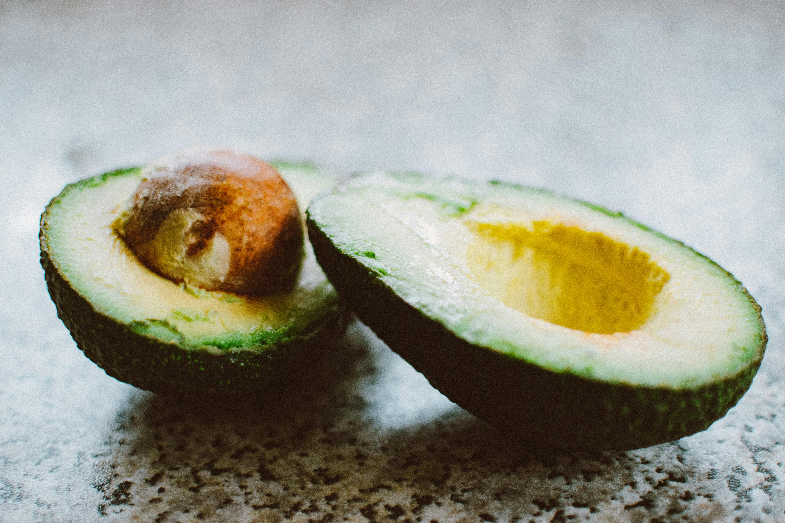
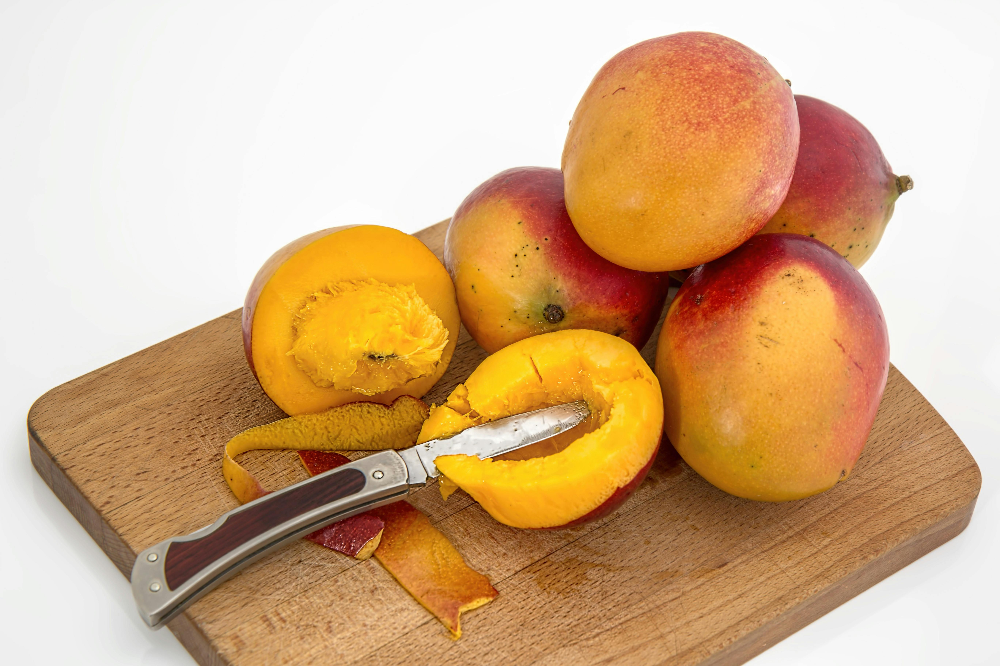

Apa Manfaat Buah Apel?
Vania Ardelia Zahra | Posted on Tuesday, 11 March 2025
Apel kaya akan serat dan antioksidan yang membantu menjaga kesehatan jantung serta melancarkan pencernaan.
Read More

Apa Manfaat Buah Alpukat?
Vania Ardelia Zahra | Posted on Wednesday, 12 March 2025
Alpukat mengandung lemak sehat, serat, dan berbagai vitamin yang bermanfaat bagi tubuh.
Read MoreApa Manfaat Buah Nanas?
Vania Ardelia Zahra | Posted on Thursday, 13 March 2025
Nanas kaya akan vitamin C, antioksidan, dan enzim bromelain yang membantu pencernaan.
Read More

Apa Manfaat Buah Mangga?
Vania Ardelia Zahra | Posted on Friday, 14 March 2025
Mangga mengandung vitamin A, C, dan serat...
Read More
Apa Manfaat Buah Jeruk?
Vania Ardelia Zahra | Posted on Saturday, 15 March 2025
Jeruk kaya akan vitamin C...
Read MoreApa Manfaat Buah Stroberi?
Vania Ardelia Zahra | Posted on Sunday, 16 March 2025
Stroberi mengandung antioksidan tinggi...
Read More